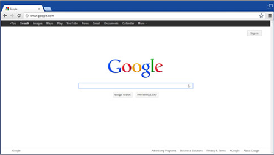

"Если бы я знал тогда, сколько людей будут указывать URL, то не стал бы использовать в синтаксисе два слэша", - Тим Бернерс-Ли.

Программы для просмотра веб-страниц называют браузерами или обозревателями. Браузер - прикладное программное обеспечение для просмотра веб-страниц; содержания веб-документов, компьютерных файлов и их каталогов; управления веб-приложениями; а также для решения других задач. В глобальной сети браузеры используют для запроса, обработки, манипулирования и отображения содержания веб-сайтов. Многие современные браузеры также могут использоваться для обмена файлами с серверами ftp, а также для непосредственного просмотра содержания файлов многих графических форматов (gif, jpeg, png, svg), аудио-видео форматов (mp3, mpeg), текстовых форматов (pdf, djvu) и других файлов.
Функциональные возможности браузеров постоянно расширяются и улучшаются благодаря конкуренции между их разработчиками и высоким темпом развития и внедрения информационных технологий. Несмотря на то, что браузеры разных изготовителей базируются на разных технологических решениях, большинство современных браузеров придерживается международных стандартов и рекомендаций W3C в области обработки и отображения данных. Стандартизация позволяет добиться предсказуемости в визуальном представлении информации конечному пользователю независимо от технологии, которая использована для ее отображения в браузере. Со времени начала применения браузеров во Всемирной паутине в начале 1990-х годов, из простого средства просмотра текстовой информации браузер превратился в комплексное прикладное программное обеспечение для обработки данных и обеспечения интерфейса между информационными ресурсами и человеком. В последние годы многие разработчики браузеров сосредоточили свои усилия на повышении удобства пользовательского интерфейса браузеров для их использования в аппаратных устройствах, в которых применяются сенсорные экраны.
W3C разрабатывает для Интернета единые принципы и стандарты (называемые «рекомендациями», англ. W3C Recommendations), которые затем внедряются производителями программ и оборудования. Таким образом достигается совместимость между программными продуктами и аппаратурой различных компаний, что делает Всемирную сеть более совершенной, универсальной и удобной.
Более конкретная цель W3C — помочь компьютерным программам достичь способности ко взаимодействию в Сети (т. н. «сетева́я интеропера́бельность», англ. Web interoperability). Применение единых стандартов в Сети — это ключевой шаг для достижения такого взаимодействия. Две другие важнейшие задачи консорциума — обеспечить полную «интернационализа́цию Сети́» и сделать Сеть доступной для людей с ограниченными возможностями. Для решения первой задачи консорциум активно сотрудничает с организацией «Юнико́д» (англ. Unicode) и рядом других рабочих групп, занимающихся международным сотрудничеством в Интернете и языковыми технологиями. Для решения второй задачи консорциум не только сотрудничает с организациями соответствующего профиля, но и разработал свои собственные рекомендации, которые сейчас активно набирают популярность.
Рекомендации консорциума Всемирной паутины открыты, то есть не защищены патентами и могут внедряться любым человеком без всяких финансовых отчислений консорциуму. В отличие от других организаций, занимающихся разработкой стандартов для Интернета, консорциум Всемирной паутины не имеет программ сертификации (на соответствие рекомендациям консорциума) и не планирует их вводить, поэтому рекомендации W3C получили гораздо большее распространение, нежели стандарты любых других организаций. В то же время, из-за отсутствия сертификации многие производители следуют рекомендациям лишь частично. Рекомендации консорциума построены таким образом, что частичное внедрение не нарушает общих стандартов. Некоторые популярные рекомендации имеют несколько степеней внедрения — кому как удобнее. Степени внедрения — это новое слово в сетевых стандартах, которое принесло консорциуму Всемирной паутины и его рекомендациям заслуженную популярность.
Рекомендации W3C зачастую хорошо проработаны и детализированы. С другой стороны, большинство рекомендаций доступны для любых категорий пользователей — от экспертов-программистов до начинающих веб-мастеров. Кроме технических спецификаций, Консорциум также публикует много руководств и советов, облегчающих внедрение рекомендаций. За последнее время W3C провёл огромную работу по популяризации своих стандартов, особенно в Европе.